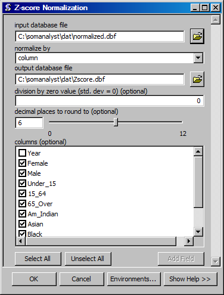

Z-Score Normalization
Creates a database file with Z-score values.
ArcGIS Reference

Parameters
- input database file
- The input database file.
- normalize by
- The column by which to normalize data.
- output database file
- The output database file.
- division by zero value (std. dev = 0)
- The value to assign if there is a division by zero.
- decimal places to round to
- The number of decimal places to which to round numbers.
- columns
- The columns to normalize. If no columns are selected, all columns will be normalized.
Code Reference
-
uiNormZ.normalize(inName, outName, direction, zeroDivision, decimalPlaces, fieldNames)
Creates a DBF with Z-score normalized values from an existing DBF.
| Arguments : |
- inName
The input DBF filename.
- outName
The ouput DBF filename.
- direction
The direction in which to determine minimum and maximum values in the input range.
- zeroDivision
The value to assign if their is a division by zero.
- decimalPlace
The number of decimal places to which numbers should be rounded.
- fieldNames
The fields on which to perform the normalization.
|
|---|